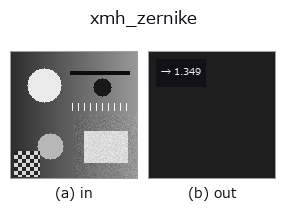

texture/shape-feature op• 데이터 종류: image → feature
• 호출: fullseye.apply(img, "xmh_zernike", a=0.5, b=0.5)(2-D 는 이미지 1 장 + 스칼라 노브 2 개 a,b∈[0,1] 모델)

*그림은 128×128 합성 입력에서 실제로 실행한 출력. 왼쪽이 입력, 오른쪽이 출력. 점군은 위에서 본 산점도(밝기 = z), 1-D 열은 꺾은선, 볼륨은 z 방향 최대값 투영, 동영상은 가운데 프레임, 복소 영상은 진폭이며, 그림이 되지 않는 반환값은 값 자체를 표시한다.*
노브 a 를 훑기(0.1 / 0.5 / 0.9, 다른 노브는 기본값):
▸ xmh_zernike: 노브 a 스윕 (문서 사이트)
*노브 b 는 출력을 바꾸지 않는다(실측: 0.1 / 0.5 / 0.9에서 동일).*
제르니케 모멘트(Zernike moments, mahotas.features.zernike_moments)의 총합. 단위원에 매핑한 이미지의 회전 불변 형상/농담 분포 특징을 실수 하나로 압축하여 반환한다.
반경은 영상 짧은 변의 절반으로 고정. a는 차수(degree, 6~12의 정수)를 바꾼다 — 차수를 올릴수록 고차 모멘트까지 더해져 값이 바뀐다. b는 사용하지 않는다. 모멘트 성분별 부호나 크기의 분포는 총합에서 상쇄되어 정보가 사라지므로, 형상의 지문으로 쓰기에는 약하다. 개별 성분이 필요한 경우에는 mahotas.features.zernike_moments를 직접 호출할 것.
• 샘플 데이터 카탈로그(DL URL / 라이선스) —— 2-D 는 skimage.data(BSD/public)+ 합성, 3-D 는 실데이터 소스(Stanford/PDS 등)의 DL URL.
• 연산자의 내력·참고문헌 —— 이 연산자 족의 바탕이 된 연구/기법의 출처.
• 알고리즘의 정전(저자·연도)과 용도는 위의 패밀리 사용 가이드에 적혀 있습니다.
아래 프로그램은 실제로 실행됨을 확인했습니다(그림과 같은 입력). Studio 도움말에서는 이 블록이 버튼이 되어 즉시 불러와 실행할 수 있습니다.
xmh_zernike 0.50 0.50
• gallery2d_features — py -3.11 examples/gallery2d_features.py
feature 를 입력으로 받는 것)texture/shape-feature)—
*Provenance: ops.py — 2D 연산자 레지스트리. 이 op 노트는 tools/opdocs.py md 가 자동 생성합니다(직접 편집하지 마세요).*
© 2026 Kazufumi Furuse — Fullseye operator documentation. Licensed under Apache-2.0.